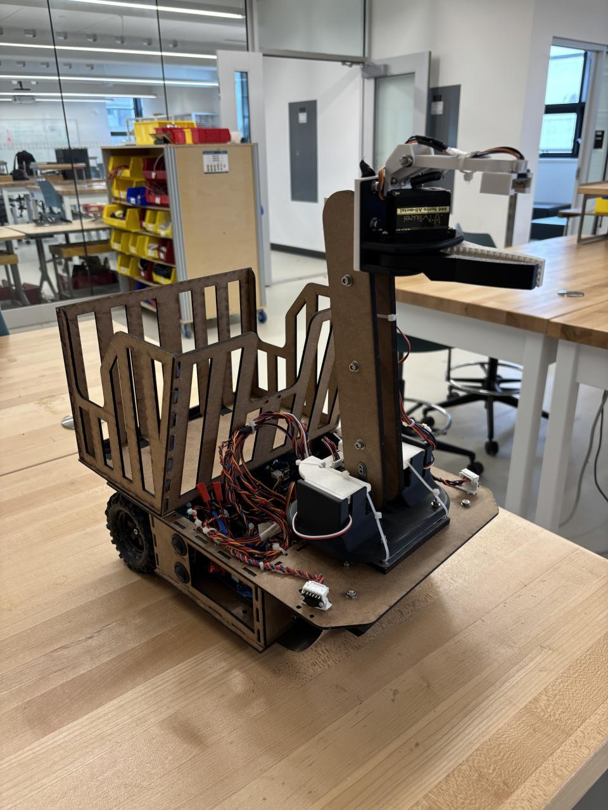
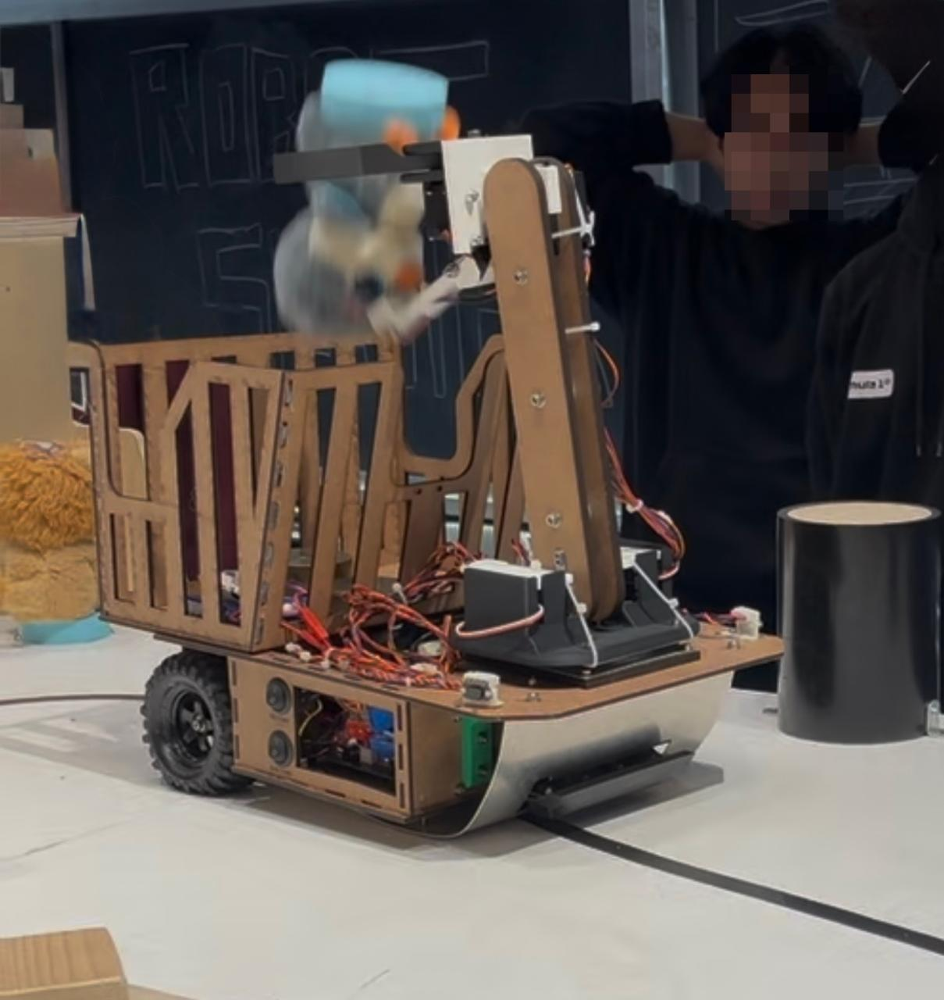

Autonomous Robot
A robot built to retrieve targets from hazardous environments.
As part of a team of four, I designed, built, and competed with an autonomous robot capable of seeking out and rescuing small stuffed animals (“pets”) from an obstacle-filled environment. Our robot placed 2nd out of 15 teams in the final course competition.
The challenge was to engineer a robot that could navigate a defined course and identify, collect, and deliver seven pets to a designated safe zone. The pets were placed in varied and challenging positions: behind obstructions, on top of pedestals, in corners, and one in an open area. Each pet was marked with a small magnet for detection.
Our solution integrated a range of hardware and control systems:
- LiDAR for initial target detection and navigation support
- Infrared reflectance sensor array in a PID feedback loop for line-following navigation
- Dual triple-axis magnetometers to guide the robotic claw with precision toward magnetic targets
- ESP32 microcontrollers, servos, DC motors, and other fundamental drive and control components
The robot was powered by three lithium-polymer batteries, and its chassis, storage bay, and robotic arm were built from laser-cut hardboard and 3D-printed PLA components.

